| Ethics Dictionary | Conditions Formulas | PTS Glossary | FAQs |
|
|
| Ethics Dictionary | Conditions Formulas | PTS Glossary | FAQs | |
Ethics and the Dynamics
Ethics as a subject is as old as humanity itself. Ethics has since beginning of time sought to define right and wrong conduct. In the dictionary Ethics is defined as the study of the general nature of morals. And: the study of the general nature of morals and the specific moral choices to be made by the individual in his relationship with others. It could also be called "philosophy of morals."
We see that Ethics and Morals are closely connected yet separate subjects. Morals are summed up in religious commandments, in laws, rules and regulations that in no uncertain terms define right and wrong. Yet, real life and real situations are not always that simple. Is it immoral to kill a mass murderer? Is it moral to kill an enemy in war? Is abortion a moral or immoral act? There are many such difficult questions that are very hard to answer. This is why we need Ethics as a separate subject from Morals.
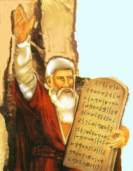 |
According to the Bible Moses
received |
Morals could be defined as a code for good conduct based on the experience of the culture or race. It is an agreed upon standard of good conduct of individuals and groups. Moral codes have their place. But Morals tend to continue beyond their time.
There are such things as Taboos: certain words, expressions, pictures and actions have to be suppressed or kept out of sight. The dictionary defines taboo as: A ban or inhibition attached to something by social custom or emotional aversion.
TV and movies find murder and violence
are good
entertainment but nudity is a terrible thing to show. "Nudity is worse
than murder!" is what much entertainment imply. This not to state we are
for nudity on TV, but it seems more natural and less destructive than murder.
The taboo apply to nudity but not to violent crime.
It is taboo to eat horse meat in Scandinavia. It can be traced back to pagan
times. Horsemeat
was part of pagan customs and rites and belonged to a lifestyle the Church
suppressed when Christianity took over.
The Soviet Union rewrote their history books repeatedly to exclude certain
disgraced leaders of the past. They were "erased from history" and
it was taboo to mention their names.
Tracing back taboos you will find they usually have a traumatic or engramic origin. Here you have the mechanism how morals can outlive their usefulness. In terms of Ethics you could say taboos are moral rules, written or unwritten, with no rational survival value in present time. The apparent value is only understood in the light of the past, especially traumatic incidents to the group as a whole.
|
|
Joseph Stalin and other |
All morals originally came about as a discovery by the group that some acts contained more pain than pleasure; more destruction than survival. An action that uniformly is seen as a survival action is declared a moral action. Those things which are uniformly seen as contra-survival acts are declared immoral. But as time goes on and life and living, political situations, medicine and technology changes it tends to become an arbitrary code of conduct not necessarily related to reason. What is moral and right conduct in one time period or under one regime may seem immoral and wrong conduct in another time period or under another regime.
This is why we need Ethics. We
defined Ethics as Moral Philosophy. We need to re-evaluate right and wrong
conduct, good and bad continuously and determine what is right to do and how to
do it. We need a method to weed out taboos and outdated survival patterns. We need a way to determine what is the right choice for each of us
here and now in a
specific difficult situation.
Man's Basic Motivation
Philosophers trying to unlock the riddles of Man, including right and wrong
conduct, have
naturally tried to find what basically motivates Man and life. If you could
determine what goal Man ultimately is seeking things would look much simpler.
Knowing that you could determine what helps Man achieving that goal and what hinders
it. Right and wrong follow naturally when you know where you are headed. If you
travel, a wrong turn would lead away from the destination; a right turn would
lead you closer to the destination.
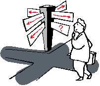 |
Right and wrong follow naturally when |
When R. Hubbard discovered that the common denominator of all life impulses is SURVIVAL this had a profound effect on how we view life and living. How we view good and bad, right and wrong. R. Hubbard defined survival, in terms of Man, as taking place along the individual's spheres of interest. The word Survival is here used in a broader sense than mere basic survival. Once mere survival is ensured, in form of food and shelter, we strive to improve our lot in life. We seek to ensure the survival for the things that assist us looking further and further ahead. 'Survival', in human terms, could also be described as 'degree of success in life', including our surroundings and life around us.
Looking for the lowest common denominator of all life impulses 'Survival' is however well chosen. The highest degree of survival would be ultimate success in all spheres of life.
These spheres of interest R. Hubbard calls the Dynamics. There are at least eight such Dynamics - possibly more. The eight Dynamics are:
First Dynamic: Survival for self.
This includes the body and one's personal belongings. Here we have self-interest and
self-preservation.
We have the fundamental battle for existence, food and shelter, to keep
our body alive and well. We have self-interest and - as things improve - we have
ensuring our good health, self-image, reputation, and a constant upgrade of
personal belongings and building up reserves.
 |
 |
|
|
First Dynamic: caring for our immediate survival
gets |
||
Second Dynamic: Survival through sex and family. This includes the sexual act and caring for spouse and children, family and family belongings. We want to survive through our children and we want our children to survive and do well in life.
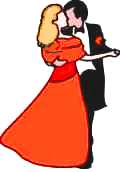 |
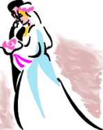 |
 |
|
Second Dynamic: interest in opposite sex, the
sexual |
||
Third Dynamic: Survival as a group member and survival for one's group or groups. This would cover everything from work place, circle of friends, associations, clubs, congregations, to Flag and Country. If our group or groups do well we will do well too.
|
Third Dynamic: we seek to survive as members of
various groups. From |
||
Fourth Dynamic: Survival for mankind and activities that ensure that. This covers care for other nations and races. Activities such as United Nations, humanitarian efforts and peace movements are all motivated by the urge of survival for the human race.
|
Fourth Dynamic: There are more things that unites us
as a species than separates |
|||||||
Fifth Dynamic: Survival for animals and plants. We don't only need them for food, we want and care for them as our pets and gardens; we take care of nature and wildlife, are environmentalists etc. We realize down deep that we are part of nature and without nature, with its plants and animals, our survival will sooner or later be seriously threatened.
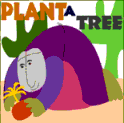 |
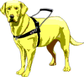 |
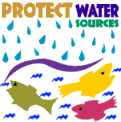 |
|
Fifth Dynamic: We have a natural bond with other |
||
Sixth Dynamic: Survival for the physical universe. We want to ensure the survival of the physical universe as it is our home. We enjoy it and depend on it in many ways. This urge tells us to take care of material objects, large and small, and makes us continue to care for and wonder about and explore the vast physical universe. Survival itself is defined in terms of the physical universe: persisting as a physical identity (body) through the passing of time despite obstacles and oppositions. Man is proudest when he through exploration, science and technology can demonstrate that he can conquer a hostile physical environment. He is continuously as a species engaged in the conquest of the physical universe.
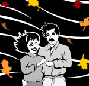 |
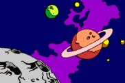 |
 |
|
Sixth Dynamic: we care for and explore the physical universe |
||
Seventh Dynamic: Survival as a spirit. We seek extended survival as spirits and through spiritual activities, like the arts, philosophy, beliefs in life after death, etc.
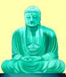 |
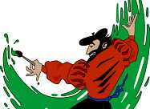 |
|
|
Seventh Dynamic: we seek extended survival through
spiritual activities |
||
Eighth Dynamic: Survival as part of a Supreme Being or Infinity. We seek to survive forever as part of a Supreme Being, Infinity and by worship of God and religion.
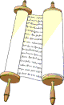 |
||
|
Eighth Dynamic: we seek to survive through |
||
All human activity and any creation that can be perceived can be classified in one or more of these Dynamics. Interestingly enough we can directly observe the first four Dynamics at work in other life forms too, be it animals or plants. They too care for their offspring and their own kind - let alone their own survival. With the understanding of the Dynamics we gain a much clearer understanding of what good and bad is, what right and wrong is and what Ethics is.
You will see many individual differences from one human to the next. The nun in the picture above has dedicated her life to God (the eighth Dynamic). The criminal is totally consumed by his First Dynamic. Each lifestyle, profession, and individual can thus be described in terms of the Dynamics he or she favors and opposes. In order to have a game we choose not to do the absolute right thing - that would be "too boring" as there are no opponents and no game. Yet, this is to a large extent a matter of choice and even hardened criminals are seen to realize the big picture and turn their lives around. You can observe people being "bad boys and girls" for the excitement it offers. They find ethical conduct is only for nerds. They want to "explore life", they want a game and the excitement a life on the edge offers. The fact is it is possible to have a bigger game and a higher Ethics level at the same time. That pursuit is what we are engaged in with ST.
The bottom-line is, there is a common denominator for all activities of life, for all life-impulses, and that is SURVIVAL. Man seeks to survive along all these Dynamics and Man is basically good as Good and Bad are defined in terms of survival. Ethics is reasoning to find "the greatest good for the greatest number of Dynamics". This is of course modified by our points of view. My family and friends, job and clubs are different from yours so my vital interests are on many points different from yours.
As far as Ethics are concerned: the more of our Dynamics an action helps and the fewer it harms, the more ethical it is. Suddenly it is possible to analyze and express ethical problems and conflicts in clearer terms.
So we have Ethics as being a personal thing, not
meaning a selfish thing, but something we consider long and hard before making
our major choices and decisions in life; and something we have to consider
regularly to adjust or correct our course through life. You have to take responsibility for a
larger sphere of Dynamics to be ethical. Ideally our actions will benefit all
our Dynamics and harm none, but usually ethical choices have to consider harming
the least as our insight and powers are limited and we do want to make our mark in
life and survive despite any opposition. Being ethical goes more to character
than degree of success, however. Success can be an outward thing and depends on
how we are perceived by others, our skills, education and ability to promote
ourselves. Ethics go to a balance between personal integrity, being a team
player and a respect for the rest of the Dynamics. The Golden Rule: "Do to
others as you want them to do to you" seems to be at the core of, or at
least part of, any ethical reflections.
Out-Ethics
From the above we can easily see what out-ethics is and how it comes about.
As we live our lives we tend to get mired down into our own limited spheres of
interests. We forget to look ahead and project the consequences of our actions
into the bigger picture. On ST-1 we had a description of problems and
solutions. Shortsighted solutions and inability to predict or consider
consequences of our actions was the way of life of criminals. Here is the quote:
 |
"Solutions" leading to |
"Examples of Problems and Solutions:
The most illustrative examples are found in criminals. You have this guy that is out of money so his solution is to rob a bank. He holds up the cashier and gets a bag full of money. For a brief moment his problem is solved. But instantly he of course gets a new problem: the crime. His immediate problem is how to get away without getting caught; he solves that by shooting a security guard. That solved, he gets outside the bank. The shooting is of course an additional crime and now he really has to get away fast. So what does he do now? He solves the get-away by hijacking a car. He drives away at great speed and causes all kinds of traffic accidents. His trail of solutions is his trail of new problems and trail of crimes. It gets worse and worse as the solutions add new problems to the existing ones and add severity to the situation. This is of course a dramatic example of how 'yesterday's solutions are today's problems'."
From this example and countless similar ones we can see that out-ethics is the inability to look ahead and be strong enough to take care of more Dynamics than strictly the first Dynamic in a shortsighted manner. There is an interesting definition of overts relevant to this. An overt acts is of course the same which is called a sin in the Bible with the footnote that 'sin' is an absolute defined in terms of religious law rather than Ethics. An overt act is by definition an out-ethics act. The technical dictionary have these definitions:
an overt act is not just injuring someone or something; an overt act is an act of omission or commission which does the least good for the least number of Dynamics or the most harm to the greatest number of Dynamics.
2. An intentionally committed harmful act committed in an effort to resolve a problem.
3. that thing which you do which you aren't willing to have happen to you.
What the bank robber does in the example above is covered under definition 2, "An intentionally committed harmful act committed in an effort to resolve a problem." It is a very shortsighted solution and a demonstration of an inability to consider the greatest good or even clearly be rational about the consequences of his own actions. To be ethical takes strength and it takes ability to look ahead. A man cheating on his wife, a corporation cutting down forests without any thought of the future, a bookkeeper cooking the books, a guy offending any living being he knows all demonstrate lack of ethical ability and lack of ability to look ahead. They may obtain a shortsighted advantage, pleasure, or amassing of wealth, but it is at the expense of the other Dynamics and ultimately their own future. Ultimately out-ethics is the inability of a person to consider and execute the behavior necessary for his own continued survival.
In-Ethics
It takes strength to be in-ethics. In-ethics is defined as reason. In the
book 'Dianetics 55!' R. Hubbard describes ethical conduct this way:
"Ethical conduct is conduct out of one’s own sense of justice and honesty. When you enforce a moral code upon people you depart considerably from anything like Ethics. People obey a moral code because they are afraid. People are ethical only when they are strong."
In Science of Survival R. Hubbard expresses it this way:
"Ethics actually consist of rationality toward the highest level of survival for the individual, the future race, the group, and mankind, and the other Dynamics taken collectively. Ethics are reason. The highest ethic level would be long-term survival concepts with minimal destruction, along any of the Dynamics."
You can see life and living as a game, a team sport if you will. We elect our team-mates and our opponents. The opponents can be competitors, hostile groups, wild animals, nature itself - and just about anything on the Dynamics. We tend to forget about the big picture and the distant future in our battle for immediate survival and advantage. The desire to have a game is also a strong desire of its own. If you were totally responsible there would be no game. This is basically how we fall away from being ethical to just being human beings full of errors, missteps and mistakes.
In-ethics does not mean that we refuse to destroy anything. Any constructive work takes destruction of something old, useless or evil. That's why the definition of Ethics has to include the expression 'minimal destruction'. The highest ethic level would be long-term survival concepts with minimal destruction, along any of the Dynamics."
|
|
|
|
|